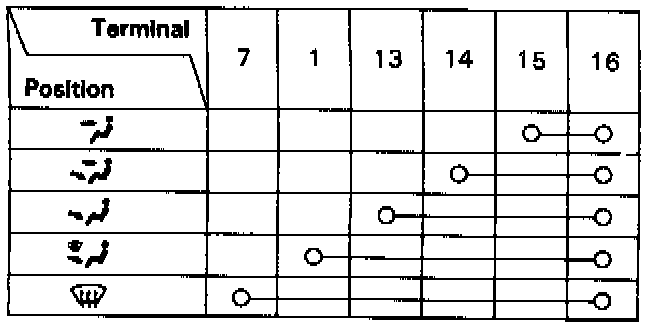
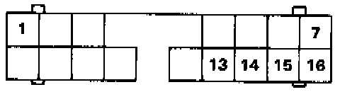
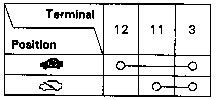
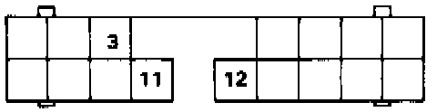

Manual A/C
FUNCTION CONTROL SWITCH TEST1. Disconnect the 16P connector from the heater control.


2. Check for continuity between the terminals according to the table.
RECIRCULATION CONTROL SWITCH TEST
1. Disconnect the 16P connector from the heater control.


2. Check for continuity between the terminals according to the table.